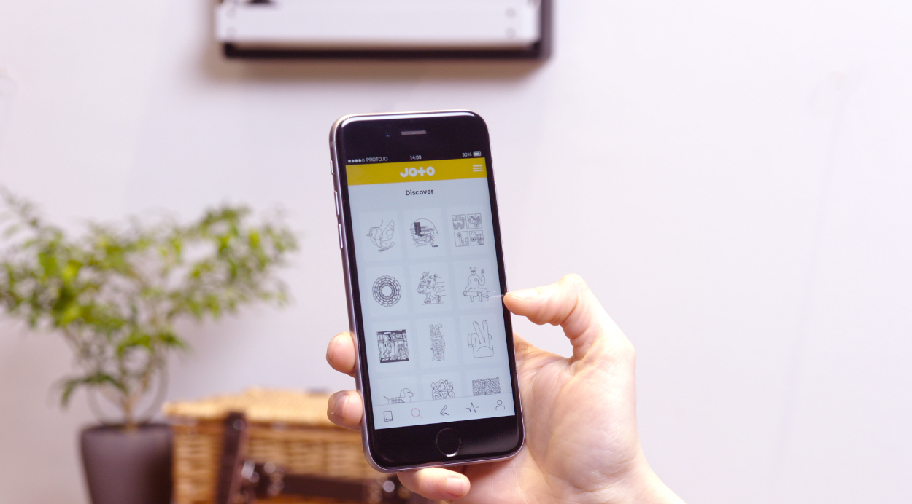
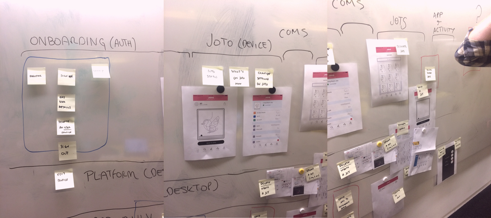
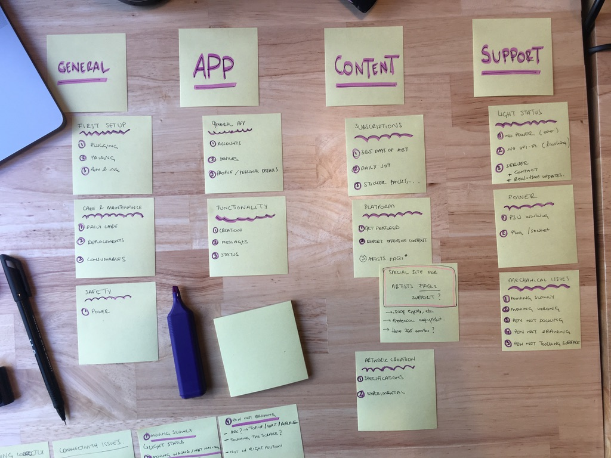
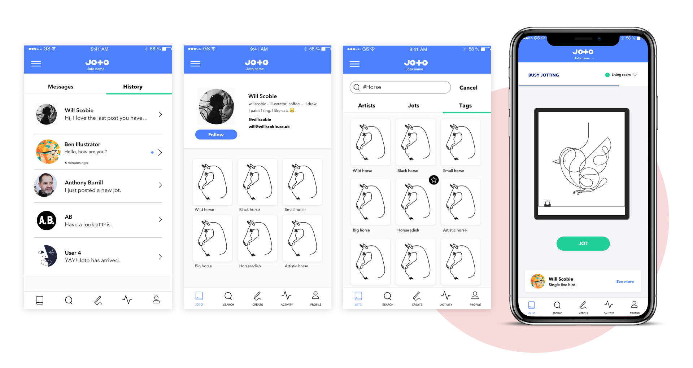
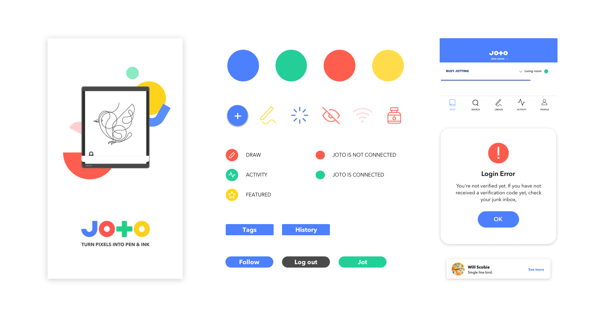
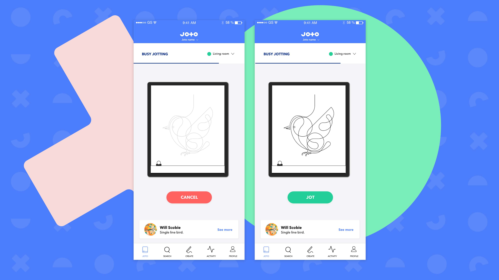
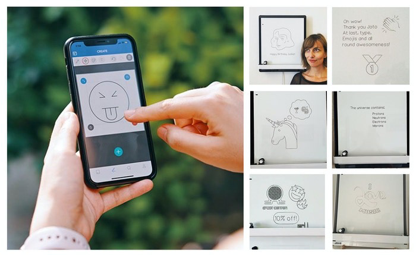
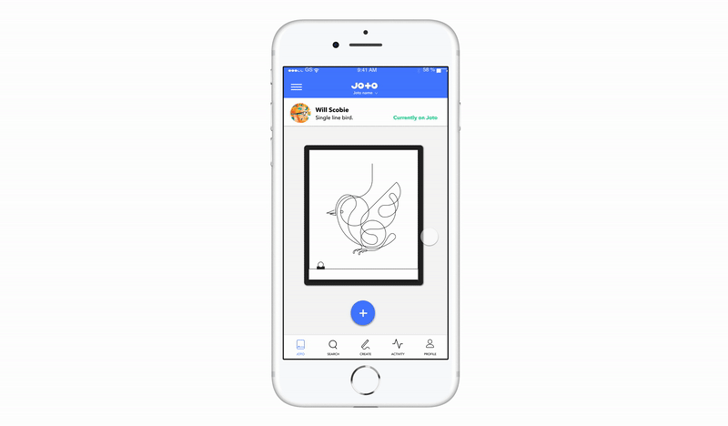

PRODUCT DESIGN – UX, UI, DESIGN SYSTEM
Joto App
The brief
As lead designer at Those, I was responsible for designing the Joto app – a web-based mobile app built to help Joto users bring their creations to life.

Discovery
First things first, we needed to set up the scope for our minimum viable product (MVP) and understand what were the key functionalities for our users and how would they tie in with the physical product. During this phase we did surveys and interviews with beta users and art collaborators – the fact that it was also a new product to market made setting up scenarios a little more challenging.
The feedback and insights gathered allowed us to identify scenarios we hadn’t even considered before and to refine the usability of our MVP. Next in the process, was to define our personas, user journeys, and the production of wireframes that'd help us test our original hypothesis.
The feedback and insights gathered allowed us to identify scenarios we hadn’t even considered before and to refine the usability of our MVP. Next in the process, was to define our personas, user journeys, and the production of wireframes that'd help us test our original hypothesis.


Design
Moving onto the design phase, one of the main challenges was to visually simplify all the possibilities that the product offered into a visually appealing and intuitive interface. We used a bottom navigation bar to allow movement between the five primary destinations in the app. In terms of UI elements and layout, we used elevation of components (z-axis) to create a sense of depth and place focus on foreground content. Card components worked really well to display the artwork, and to keep a clean and minimalistic look.

Based on this, we developed a design system that created a standard and consistent experience throughout the platform & app. Being a small team made it easier to follow an iterative process, allowing us to test our designs over and over again, and keep us focused on producing a compelling user experience. The development of wireframes, design and prototyping was done using Sketch and Invision app.

Development & iterations
We worked agile throughout the entire process, which made really efficient the collaboration between teams, made sure there was regular testing of the prototype and kept the momentum in the development of each feature. Regular testing to detect and solve issues was key to make sure we delivered a high-quality software product, and to plan future iterations of it.



The launch
We released the Joto app a few weeks after the shipment of Joto, so the users could get familiarised with it and we could fix any bugs or issues with the interface before Joto arrived. The Joto app is now available in the App Store and Google Play, with a rating of 4.1/5.

Role Lead Digital Designer
Responsibilities End-to-end app design UX, UI, research, visual design, prototyping & testing
Launch date 2017-2018
Responsibilities End-to-end app design UX, UI, research, visual design, prototyping & testing
Launch date 2017-2018